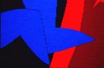

- Jeni Ross >
- Commissions
- The New College Tapestries
- Gallery 1: Tapestries
- Gallery 2: On Paper
- Notebooks
- About
- Contact
 The British countryside has been almost entirely changed by man and yet we are still deeply influenced by it. The relationships of a figure within a space was important to me for this commision and I wanted to convey the feeling of the figure as both dominating but also part of the landscape. Starting points for the design were paintings such as 'Mr and Mrs Andrews' by Gainsborough and the drawings by Samuel Palmer. I often use the idea of night and day existing at the same time in my work and I felt this would have particular relevance to the workings of parliament.
The British countryside has been almost entirely changed by man and yet we are still deeply influenced by it. The relationships of a figure within a space was important to me for this commision and I wanted to convey the feeling of the figure as both dominating but also part of the landscape. Starting points for the design were paintings such as 'Mr and Mrs Andrews' by Gainsborough and the drawings by Samuel Palmer. I often use the idea of night and day existing at the same time in my work and I felt this would have particular relevance to the workings of parliament.
 A major feature in many antique tapestries is a curtain. This plays with the idea of a tapestry¹s function within a room, its physical nature as a textile and also with the notion of something revealed. I felt this was also relevant and have designed the piece with this in mind.
A major feature in many antique tapestries is a curtain. This plays with the idea of a tapestry¹s function within a room, its physical nature as a textile and also with the notion of something revealed. I felt this was also relevant and have designed the piece with this in mind.
&q(100))
Jeni_Ross: Detail/Figure in a Landscape
1400 x 2200 mm
Woven Tapestry
Tapestry for the House of Lords offices. No 1 Millbank. Tapestry and paintings commissioned by the Parliamentary Works Directorate for the Government Art Collection.
 The British countryside has been almost entirely changed by man and yet we are still deeply influenced by it. The relationship of a figure within a space is important to me and I wanted to convey the feeling of the figure as both dominating but also part of the landscape. Starting points for the design were paintings such as 'Mr and Mrs Andrews' by Gainsborough and drawings by Samuel Palmer. I often use the idea of night and day existing at the same time in my work and I felt this would have particular relevance to the workings of parliament.
The British countryside has been almost entirely changed by man and yet we are still deeply influenced by it. The relationship of a figure within a space is important to me and I wanted to convey the feeling of the figure as both dominating but also part of the landscape. Starting points for the design were paintings such as 'Mr and Mrs Andrews' by Gainsborough and drawings by Samuel Palmer. I often use the idea of night and day existing at the same time in my work and I felt this would have particular relevance to the workings of parliament.
 A major feature in many antique tapestries is a curtain. This plays with the idea of a tapestry¹s function within a room, its physical nature as a textile and also with the notion of something revealed. I felt this was particularly relevant and have designed the piece with this in mind.
A major feature in many antique tapestries is a curtain. This plays with the idea of a tapestry¹s function within a room, its physical nature as a textile and also with the notion of something revealed. I felt this was particularly relevant and have designed the piece with this in mind.
&w(150)&q(100)) Jeni_Ross: Figure in a Landscape |
 Jeni_Ross: Detail/Figure in a Landscape |
&w(150)&q(100)) Jeni_Ross: Figure in a Landscape: siting |